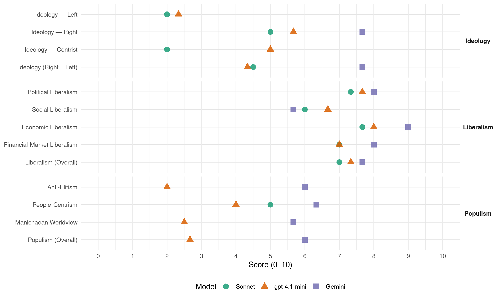

(Brazil, 2022)
manifesto_id 180620_202210
Get full text: This site shows derived annotations and short verbatim quotes only. The full manifesto text is © Manifesto Project / WZB — obtain it via manifesto-project.wzb.eu using the manifesto_id above.
Headline scores
| Dimension | Sonnet | gpt-4.1-mini | Gemini |
|---|---|---|---|
| Populism (Overall) | – | 2.7 | 6.0 |
| Anti-Elitism | – | 2.0 | 6.0 |
| People-Centrism | 5.0 | 4.0 | 6.3 |
| Manichaean Worldview | – | 2.5 | 5.7 |
| Ideology (Right − Left) | 4.5 | 4.3 | 7.7 |
| Liberalism (Overall) | 7.0 | 7.3 | 7.7 |
| Political Liberalism | 7.3 | 7.7 | 8.0 |
| Social Liberalism | 6.0 | 6.7 | 5.7 |
| Economic Liberalism | 7.7 | 8.0 | 9.0 |
| Financial-Market Liberalism | 7.0 | 7.0 | 8.0 |
Evidence per dimension
Economic Liberalism
Gemini · score 9.0 · verified · chunk 1
“desregulamentar as normas para favorecer a criação”
prosseguir nos avanços da legislação trabalhista para facilitar as contratações, desburocratizar e desregular as normas para favorecer a criação de empresas e o empreendedorismo
Gemini · score 9.0 · verified · chunk 2
“estimulou a livre concorrência, a competitividade”
Saneamento Básico, de 2020, que, entre outros aspectos, estimulou a livre concorrência, a competitividade, a eficiência
Gemini · score 9.0 · verified · chunk 3
“reforma econômica de cunho liberal”
Busca-se dar continuidade ao Caminho da Prosperidade, com a implementação e a consolidação: da reforma econômica de cunho liberal; da permanência das políticas públicas sustentáveis
gpt-4.1-mini · score 9.0 · verified · chunk 1
“redução e simplificação de impostos, como os impostos de importação (II), sobre produtos industrializados (IPI) e sobre circulação de mercadorias e serviços (ICMS)”
Do mesmo modo, o Governo Federal tem auxiliado na redução e simplificação de impostos, como os impostos de importação (II), sobre produtos industrializados (IPI) e sobre circulação de mercadorias e serviços (ICMS), o que proporciona uma margem de folga para o empresário.
gpt-4.1-mini · score 7.0 · verified · chunk 2
“A desestatização da Eletrobras é um bom exemplo de que é possível e de que os resultados positivos são praticamente imediatos”
A desestatização da Eletrobras é um bom exemplo de que é possível e de que os resultados positivos são praticamente imediatos, pois estimula a oferta de energia, a competitividade e a livre concorrência (com a ampliação e a melhoria da qualidade e a redução dos preços dos serviços) e a captação de mais investimentos para o setor.
gpt-4.1-mini · score 8.0 · verified · chunk 3
“valorizem o empreendedorismo, a liberdade econômica, que gerem empregos sólidos”
Tudo alicerçado na garantia dos direitos humanos para todos e em um conjunto de políticas socioeconômicas robustas, que valorizem o empreendedorismo, a liberdade econômica, que gerem empregos sólidos diante das incertezas que as tecnologias naturalmente propiciam, que deixem para o Estado somente aquilo que é sua função precípua, a fim de dedicar seus esforços ao cidadão brasileiro, nosso verdadeiro e supremo soberano.
Sonnet · score 8.0 · verified · chunk 1
“liberdade econômica, no direito à propriedade”
acreditam na família, na democracia, na liberdade econômica, no direito à propriedade, no direito à vida do nascituro
Sonnet · score 7.0 · verified · chunk 2
“estimulou a livre concorrência, a competitividade”
Marco Regulatório do Saneamento Básico, de 2020, que, entre outros aspectos, estimulou a livre concorrência, a competitividade, a eficiência e a sustentabilidade econômica na prestação dos serviços
Sonnet · score 8.0 · verified · chunk 3
“liberdade econômica, que gerem empregos sólidos”
que valorizem o empreendedorismo, a liberdade econômica, que gerem empregos sólidos diante das incertezas que as tecnologias naturalmente propiciam
Financial-Market Liberalism
Gemini · score 8.0 · verified · chunk 1
“competitividade do Sistema Financeiro Nacional”
estimular a democratização do crédito por meio do aumento da concorrência e da competitividade do Sistema Financeiro Nacional, do incentivo a novos entrantes
Gemini · score 8.0 · verified · chunk 2
“Novo Marco de Securitização, Registros Públicos”
fortalecem a segurança jurídica podem ser citados: Novo Marco de Securitização, Registros Públicos Eletrônicos
gpt-4.1-mini · score 8.0 · verified · chunk 1
“aumentar a concorrência e da competitividade do Sistema Financeiro Nacional”
o estimular a democratização do crédito por meio do aumento da concorrência e da competitividade do Sistema Financeiro Nacional, do incentivo a novos entrantes, da racionalização de obrigações regulatórias e das boas práticas de governança;
gpt-4.1-mini · score 6.0 · verified · chunk 3
“fomento do crédito à produção e a promoção do empreendedorismo”
O fomento do crédito à produção e a promoção do empreendedorismo são fundamentais. Educação, indústria, agricultura, energia, telecomunicações, transporte, finanças e serviços devem conjugar-se harmonicamente para fortalecer a capacidade do Brasil de se adaptar às mudanças do cenário internacional.
Sonnet · score 7.0 · verified · chunk 1
“democratização do crédito por meio do aumento da concorrência”
estimular a democratização do crédito por meio do aumento da concorrência e da competitividade do Sistema Financeiro Nacional, do incentivo a novos entrantes
Sonnet · score 7.0 · verified · chunk 2
“Novo Marco de Securitização, Registros Públicos Eletrônicos”
Exemplos de marcos regulatórios encaminhados pelo governo que fortalecem a segurança jurídica podem ser citados: Novo Marco de Securitização, Registros Públicos Eletrônicos (atual Lei 14.382/2022), Novo Marco de Garantias etc.
Sonnet · score 7.0 · verified · chunk 3
“fomento do crédito à produção e a promoção do empreendedorismo”
O fomento do crédito à produção e a promoção do empreendedorismo são fundamentais. Educação, indústria, agricultura, energia, telecomunicações, transporte, finanças e serviços devem conjugar-se
Political Liberalism
Gemini · score 8.0 · verified · chunk 1
“garantindo a democracia e a dignidade”
elege um governo: propiciar liberdade e bem- estar, garantindo a democracia e a dignidade para uma vida justa e com propósito a cada cidadão brasileiro.
Gemini · score 8.0 · verified · chunk 2
“Todos são iguais perante a lei”
garante esse tipo de SEGURANÇA ao declarar em seu Art. 5o que “Todos são iguais perante a lei, sem distinção
Gemini · score 8.0 · verified · chunk 3
“defender e promover o regime democrático”
I. Democracia, Soberania, Universalismo e Equilíbrio O Governo do Brasil tem primado por defender e promover o regime democrático. Assim, nada mais natural do que a busca
gpt-4.1-mini · score 8.0 · verified · chunk 1
“garantir a democracia e a dignidade para uma vida justa e com propósito a cada cidadão brasileiro”
Afinal, é para isso que se elege um governo: propiciar liberdade e bem- estar, garantindo a democracia e a dignidade para uma vida justa e com propósito a cada cidadão brasileiro.
gpt-4.1-mini · score 7.0 · verified · chunk 2
“A Constituição Federal garante esse tipo de SEGURANÇA ao declarar em seu Art. 5o que “Todos são iguais perante a lei”
A Constituição Federal garante esse tipo de SEGURANÇA ao declarar em seu Art. 5o que “Todos são iguais perante a lei, sem distinção de qualquer natureza, garantindo-se aos brasileiros e aos estrangeiros residentes no país a inviolabilidade do direito à vida, à liberdade, à igualdade, à segurança e à propriedade, nos termos seguintes: […] XXXVI - a lei não prejudicará o direito adquirido, o ato jurídico perfeito e a coisa julgada.
gpt-4.1-mini · score 8.0 · verified · chunk 3
“defender e promover o regime democrático”
O Governo do Brasil tem primado por defender e promover o regime democrático. Assim, nada mais natural do que a busca por cooperação com outras democracias, o que torna ainda mais coerente a promoção da liberdade nas suas mais variadas formas, da transparência e dos direitos humanos para todos.
Sonnet · score 7.0 · verified · chunk 1
“garantindo a democracia e a dignidade”
propiciar liberdade e bem-estar, garantindo a democracia e a dignidade para uma vida justa e com propósito a cada cidadão brasileiro.
Sonnet · score 7.0 · verified · chunk 2
“intimamente ligados ao conceito de Democracia”
São, portanto, intimamente ligados ao conceito de Democracia, pois primam pela igualdade de todos em seus direitos, deveres e dignidade.
Sonnet · score 8.0 · verified · chunk 3
“eleições livres e transparentes; liberdade de associação”
como eleições livres e transparentes; liberdade de associação; de opinião e de imprensa; segurança jurídica; igualdade e respeito aos poderes constituídos e sua independência constitucional
Liberalism (Overall)
Gemini · score 7.0 · verified · chunk 1
“desregulamentar as normas para favorecer a criação”
prosseguir nos avanços da legislação trabalhista para facilitar as contratações, desburocratizar e desregular as normas para favorecer a criação de empresas e o empreendedorismo
Gemini · score 8.0 · verified · chunk 2
“estimulou a livre concorrência, a competitividade”
Saneamento Básico, de 2020, que, entre outros aspectos, estimulou a livre concorrência, a competitividade, a eficiência
Gemini · score 8.0 · verified · chunk 3
“reforma econômica de cunho liberal”
Busca-se dar continuidade ao Caminho da Prosperidade, com a implementação e a consolidação: da reforma econômica de cunho liberal; da permanência das políticas públicas sustentáveis
gpt-4.1-mini · score 8.0 · verified · chunk 1
“propiciar liberdade e bem- estar, garantindo a democracia e a dignidade para uma vida justa”
Afinal, é para isso que se elege um governo: propiciar liberdade e bem- estar, garantindo a democracia e a dignidade para uma vida justa e com propósito a cada cidadão brasileiro.
gpt-4.1-mini · score 7.0 · verified · chunk 2
“A desestatização da Eletrobras é um bom exemplo de que é possível e de que os resultados positivos são praticamente imediatos”
A desestatização da Eletrobras é um bom exemplo de que é possível e de que os resultados positivos são praticamente imediatos, pois estimula a oferta de energia, a competitividade e a livre concorrência (com a ampliação e a melhoria da qualidade e a redução dos preços dos serviços) e a captação de mais investimentos para o setor.
gpt-4.1-mini · score 7.0 · verified · chunk 3
“valorizem o empreendedorismo, a liberdade econômica, que gerem empregos sólidos”
Tudo alicerçado na garantia dos direitos humanos para todos e em um conjunto de políticas socioeconômicas robustas, que valorizem o empreendedorismo, a liberdade econômica, que gerem empregos sólidos diante das incertezas que as tecnologias naturalmente propiciam, que deixem para o Estado somente aquilo que é sua função precípua, a fim de dedicar seus esforços ao cidadão brasileiro, nosso verdadeiro e supremo soberano.
Sonnet · score 7.0 · verified · chunk 1
“economia liberalista que investe em políticas públicas”
o caminho para a prosperidade da nação foi fundamentado na economia liberalista que investe em políticas públicas que combatem a pobreza e reduzem a desigualdade
Sonnet · score 7.0 · verified · chunk 2
“desestatização ou privatização e as concessões para o meio privado são fundamentais”
a desestatização ou privatização e as concessões para o meio privado são fundamentais, assim como outras parcerias públicas de investimentos.
Sonnet · score 7.0 · verified · chunk 3
“reforma econômica de cunho liberal”
Busca-se dar continuidade ao Caminho da Prosperidade, com a implementação e a consolidação: da reforma econômica de cunho liberal; da permanência das políticas públicas sustentáveis
Anti-Elitism
Gemini · score 8.0 · verified · chunk 1
“alastrou a corrupção, que desordenou as contas”
que devastou milhões de empregos, que endividou as nossas empresas estatais em centenas de bilhões de reais, que alastrou a corrupção, que desordenou as contas públicas e mergulhou o país na recessão.
Gemini · score 5.0 · verified · chunk 2
“sem conotações ideológicas que apenas distorcem”
exercer um pensamento crítico sem conotações ideológicas que apenas distorcem a percepção de mundo
Gemini · score 5.0 · verified · chunk 3
“desaparelhamento ideológico da sociedade e do aparato do Estado”
da liberdade de pensamento sem coerção ideológica de qualquer natureza; e do desaparelhamento ideológico da sociedade e do aparato do Estado, visando recuperar a coesão social.
gpt-4.1-mini · score 2.0 · verified · chunk 1
“modelo de gestão implantado no Brasil favoreceu a proliferação da pobreza”
ANTES DO GOVERNO BOLSONARO, O MODELO DE GESTÃO IMPLANTADO NO BRASIL FAVORECEU A PROLIFERAÇÃO DA POBREZA, AO MESMO TEMPO EM QUE IMPEDIU A IMPLEMENTAÇÃO DE UM DESENVOLVIMENTO ECONÔMICO SEGURO, PRÓSPERO E SUSTENTÁVEL A LONGO PRAZO De acordo com o Banco Mundial, em 2002 existia no mundo 1,58 bilhão de pessoas vivendo abaixo da linha da pobreza.
gpt-4.1-mini · score 2.0 · verified · chunk 2
“O governo Bolsonaro adotou medidas para atuar fortemente e com contundência contra os crimes ambientais”
O governo Bolsonaro adotou medidas para atuar fortemente e com contundência contra os crimes ambientais e demais crimes associados, com a Operação Guardiões do Bioma. Na gestão após a reeleição, é necessário trazer continuidade a esse esforço de proteção, ampliando o número de bases na Amazônia e tornando-as fixas e permanentes, promovendo a efetiva presença do Estado, coibindo assim todo e qualquer crime em regiões onde atividades como o narcogarimpo e a lavagem de dinheiro são predominantes.
gpt-4.1-mini · score 2.0 · verified · chunk 3
“retomada da moralidade pública pelo combate à corrupção”
…continuar valorizando o servidor, com o objetivo de gerar maior comprometimento e envolvimento do mesmo com as instituições e com a melhoria dos resultados, de forma a também aumentar a eficiência na prestação dos serviços pelo Estado, de forma humanizada. A retomada da moralidade pública pelo combate à corrupção; da paz social pela recuperação do sistema judicial e o de segurança pública; da retomada e valorização do civismo, do patriotismo, da instituição da família e dos valores morais e éticos; da desideologização do ensino; da liberdade de pensamento sem coerção ideológica de qualquer natureza; e do desaparelhamento ideológico da sociedade e do aparato do Estado, visando recuperar a coesão social.
Sonnet · score 4.0 · mixed · chunk 1
“modelo antigo, que fez muito mal ao Brasil”
Esse é o modelo antigo, que fez muito mal ao Brasil nas últimas décadas e não conseguiu transformar a nossa nação, nem melhorar a vida do nosso povo.
Sonnet · score 2.0 · mixed · chunk 2
“combate à corrupção foram um dos carros-chefes”
A integridade e o combate à corrupção foram um dos carros-chefes do governo de 2019-2022. Foram coibidas práticas que denotassem falta de cuidado com a coisa pública.
Sonnet · score 3.0 · mixed · chunk 3
“retomada da moralidade pública pelo combate à corrupção”
da permanência das políticas públicas sustentáveis e sem viés eleitoreiro; da retomada da moralidade pública pelo combate à corrupção; da paz social pela recuperação do sistema judicial
Ideology — Centrist
gpt-4.1-mini · score 6.0 · verified · chunk 1
“modelo de gestão implantado no Brasil favoreceu a proliferação da pobreza”
ANTES DO GOVERNO BOLSONARO, O MODELO DE GESTÃO IMPLANTADO NO BRASIL FAVORECEU A PROLIFERAÇÃO DA POBREZA, AO MESMO TEMPO EM QUE IMPEDIU A IMPLEMENTAÇÃO DE UM DESENVOLVIMENTO ECONÔMICO SEGURO, PRÓSPERO E SUSTENTÁVEL A LONGO PRAZO De acordo com o Banco Mundial, em 2002 existia no mundo 1,58 bilhão de pessoas vivendo abaixo da linha da pobreza.
gpt-4.1-mini · score 5.0 · verified · chunk 2
“O governo Bolsonaro adotou medidas para atuar fortemente e com contundência contra os crimes ambientais”
O governo Bolsonaro adotou medidas para atuar fortemente e com contundência contra os crimes ambientais e demais crimes associados, com a Operação Guardiões do Bioma. Na gestão após a reeleição, é necessário trazer continuidade a esse esforço de proteção, ampliando o número de bases na Amazônia e tornando-as fixas e permanentes, promovendo a efetiva presença do Estado, coibindo assim todo e qualquer crime em regiões onde atividades como o narcogarimpo e a lavagem de dinheiro são predominantes.
gpt-4.1-mini · score 4.0 · verified · chunk 3
“governo sério, democrático e comprometido com os valores de sua gente”
Buscou-se, neste Plano de Governo, alinhar perspectivas daqueles que apoiam a presente candidatura e a continuidade e aperfeiçoamento das ações iniciadas no governo gestão 2019-2022, sempre com temas que busquem a melhoria do bem-estar da população ou o seu benefício razão de ser de todo governo sério, democrático e comprometido com os valores de sua gente.
Sonnet · score 2.0 · verified · chunk 1
“não se limita a ser um conjunto de promessas eleitoreiras vazias”
Nosso Plano de Governo, chamado de CAMINHO DA PROSPERIDADE – CONSTRUINDO UMA GRANDE NAÇÃO, não se limita a ser um conjunto de promessas eleitoreiras vazias
Sonnet · score 2.0 · verified · chunk 3
“melhoria do bem-estar da população ou o seu benefício”
sempre com temas que busquem a melhoria do bem-estar da população ou o seu benefício razão de ser de todo governo sério, democrático e comprometido com os valores de sua gente
Ideology — Left
gpt-4.1-mini · score 2.0 · verified · chunk 1
“combate à pobreza e reduzem a desigualdade através da geração de emprego e renda”
o caminho para a prosperidade da nação foi fundamentado na economia liberalista que investe em políticas públicas que combatem a pobreza e reduzem a desigualdade através da geração de emprego e renda.
gpt-4.1-mini · score 3.0 · verified · chunk 2
“ampliando e consolidando na gestão 2023-2026 a proteção integral da dignidade das mulheres”
Tudo porque neste governo e na sua continuidade, após a reeleição, nenhuma mulher fica para trás, dando efetividade à implementação dessas leis e consolidando essas políticas públicas, ampliando e consolidando na gestão 2023-2026 a proteção integral da dignidade das mulheres.
gpt-4.1-mini · score 2.0 · verified · chunk 3
“valorizem o empreendedorismo, a liberdade econômica, que gerem empregos sólidos”
…alicerçado na garantia dos direitos humanos para todos e em um conjunto de políticas socioeconômicas robustas, que valorizem o empreendedorismo, a liberdade econômica, que gerem empregos sólidos diante das incertezas que as tecnologias naturalmente propiciam, que deixem para o Estado somente aquilo que é sua função precípua, a fim de dedicar seus esforços ao cidadão brasileiro, nosso verdadeiro e supremo soberano.
Sonnet · score 2.0 · verified · chunk 1
“redução das desigualdades sociais e regionais”
elevar a renda e a qualidade de vida da população brasileira com redução das desigualdades sociais e regionais
Sonnet · score 3.0 · verified · chunk 2
“reduzam as desigualdades sociais e regionais”
definindo melhores critérios de redistribuição de recursos que promovam a melhoria da qualidade da educação e reduzam as desigualdades sociais e regionais.
Sonnet · score 1.0 · verified · chunk 3
“garantia dos direitos humanos para todos”
Tudo alicerçado na garantia dos direitos humanos para todos e em um conjunto de políticas socioeconômicas robustas, que valorizem o empreendedorismo, a liberdade econômica
Ideology (Right − Left)
Gemini · score 9.0 · verified · chunk 1
“Deus, Pátria, Família, Vida e Liberdade”
e da manutenção de valores que são tradicionais em nossa sociedade: Deus, Pátria, Família, Vida e Liberdade.
Gemini · score 7.0 · verified · chunk 2
“pais são os principais atores… não o Estado”
sob a premissa de que os pais são os principais atores na educação das crianças e não o Estado!
Gemini · score 7.0 · verified · chunk 3
“desaparelhamento ideológico da sociedade e do aparato do Estado”
da liberdade de pensamento sem coerção ideológica de qualquer natureza; e do desaparelhamento ideológico da sociedade e do aparato do Estado, visando recuperar a coesão social.
gpt-4.1-mini · score 5.0 · verified · chunk 1
“modelo antigo, que fez muito mal ao Brasil nas últimas décadas”
Esse é o modelo antigo, que fez muito mal ao Brasil nas últimas décadas e não conseguiu transformar a nossa nação, nem melhorar a vida do nosso povo. Já o novo modelo de gestão, implantado no governo Bolsonaro, é pelo Bem do Brasil, é um modelo que produz e distribui riqueza
gpt-4.1-mini · score 5.0 · verified · chunk 2
“O governo Bolsonaro adotou medidas para atuar fortemente e com contundência contra os crimes ambientais”
O governo Bolsonaro adotou medidas para atuar fortemente e com contundência contra os crimes ambientais e demais crimes associados, com a Operação Guardiões do Bioma. Na gestão após a reeleição, é necessário trazer continuidade a esse esforço de proteção, ampliando o número de bases na Amazônia e tornando-as fixas e permanentes, promovendo a efetiva presença do Estado, coibindo assim todo e qualquer crime em regiões onde atividades como o narcogarimpo e a lavagem de dinheiro são predominantes.
gpt-4.1-mini · score 3.0 · verified · chunk 3
“retomada e valorização do civismo, do patriotismo, da instituição da família”
…a retomada e valorização do civismo, do patriotismo, da instituição da família e dos valores morais e éticos; da desideologização do ensino; da liberdade de pensamento sem coerção ideológica de qualquer natureza; e do desaparelhamento ideológico da sociedade e do aparato do Estado, visando recuperar a coesão social.
Sonnet · score 4.0 · verified · chunk 1
“valores conservadores”
sem renunciar à nossa Visão e aos valores conservadores, com a rota traçada pela EFD fundamentamos nossa gestão entre 2019 e 2022
Sonnet · score 3.0 · mixed · chunk 2
“famílias fortes são a base de nações fortes”
dentro da ideia de que os pais são os principais atores na educação das crianças, e não o Estado, e de que famílias fortes são a base de nações fortes.
Sonnet · score 5.0 · verified · chunk 3
“reforma econômica de cunho liberal”
Busca-se dar continuidade ao Caminho da Prosperidade, com a implementação e a consolidação: da reforma econômica de cunho liberal; da permanência das políticas públicas sustentáveis
Ideology — Right
Gemini · score 9.0 · verified · chunk 1
“Deus, Pátria, Família, Vida e Liberdade”
e da manutenção de valores que são tradicionais em nossa sociedade: Deus, Pátria, Família, Vida e Liberdade.
Gemini · score 7.0 · verified · chunk 2
“pais são os principais atores… não o Estado”
sob a premissa de que os pais são os principais atores na educação das crianças e não o Estado!
Gemini · score 7.0 · verified · chunk 3
“desaparelhamento ideológico da sociedade e do aparato do Estado”
da liberdade de pensamento sem coerção ideológica de qualquer natureza; e do desaparelhamento ideológico da sociedade e do aparato do Estado, visando recuperar a coesão social.
gpt-4.1-mini · score 7.0 · verified · chunk 1
“manutenção de valores que são tradicionais em nossa sociedade: Deus, Pátria e Família, Vida e Liberdade”
… por meio do bem-estar social, do aumento da oferta de emprego, da geração de renda, da segurança e da manutenção de valores que são tradicionais em nossa sociedade: Deus, Pátria e Família, Vida e Liberdade.”
gpt-4.1-mini · score 7.0 · verified · chunk 2
“a regularização fundiária e a concessão de florestas para a iniciativa privada contribuirão para a exploração racional e sustentável da Amazônia”
A regularização fundiária e a concessão de florestas para a iniciativa privada contribuirão para a exploração racional e sustentável da Amazônia. I.Soberania A Amazônia brasileira é um patrimônio da Nação brasileira. A soberania brasileira é inquestionável e inegociável.
gpt-4.1-mini · score 3.0 · verified · chunk 3
“retomada e valorização do civismo, do patriotismo, da instituição da família”
…a retomada e valorização do civismo, do patriotismo, da instituição da família e dos valores morais e éticos; da desideologização do ensino; da liberdade de pensamento sem coerção ideológica de qualquer natureza; e do desaparelhamento ideológico da sociedade e do aparato do Estado, visando recuperar a coesão social.
Sonnet · score 5.0 · verified · chunk 1
“Deus, Pátria, Família, Vida e Liberdade”
manutenção de valores que são tradicionais em nossa sociedade: Deus, Pátria, Família, Vida e Liberdade.
Sonnet · score 4.0 · verified · chunk 2
“pais são os principais atores na educação das crianças”
sob a premissa de que os pais são os principais atores na educação das crianças e não o Estado! … famílias fortes são a base de nações fortes.
Sonnet · score 6.0 · verified · chunk 3
“LIBERDADE, DEMOCRACIA, VIDA, FAMÍLIA e SEGURANÇA”
Foram mantidos conceitos inegociáveis do projeto em andamento, como LIBERDADE, DEMOCRACIA, VIDA, FAMÍLIA e SEGURANÇA, nos seus mais variados espectros, e respeito às LEIS
Manichaean Worldview
Gemini · score 8.0 · verified · chunk 1
“Um, fortalece a pobreza e a miséria”
Importante salientar a diferença entre o modelo de gestão anterior a Bolsonaro e o exercido atualmente. Um, fortalece a pobreza e a miséria, não estimula nem a procura, nem a geração de empregos
Gemini · score 5.0 · verified · chunk 2
“pais são os principais atores… não o Estado”
sob a premissa de que os pais são os principais atores na educação das crianças e não o Estado!
Gemini · score 4.0 · verified · chunk 3
“retomada da moralidade pública pelo combate à corrupção”
da permanência das políticas públicas sustentáveis e sem viés eleitoreiro; da retomada da moralidade pública pelo combate à corrupção; da paz social pela recuperação do sistema judicial
gpt-4.1-mini · score 3.0 · verified · chunk 1
“modelo antigo, que fez muito mal ao Brasil nas últimas décadas”
Esse é o modelo antigo, que fez muito mal ao Brasil nas últimas décadas e não conseguiu transformar a nossa nação, nem melhorar a vida do nosso povo. Já o novo modelo de gestão, implantado no governo Bolsonaro, é pelo Bem do Brasil, é um modelo que produz e distribui riqueza
gpt-4.1-mini · score 2.0 · verified · chunk 2
“O Brasil pode, inclusive, vir a se tornar um “País Verde Desenvolvido””
Quando observado sob a ótica da pegada ecológica líquida e do gigantesco volume de serviços ambientais que efetivamente produz, o país tem uma posição completamente diferenciada e positiva em relação à grande maioria dos demais países com características econômicas e/ou territoriais comparáveis. O Brasil pode, inclusive, vir a se tornar um “País Verde Desenvolvido”, algo que a maioria dos países, tidos atualmente como desenvolvidos, não poderiam.
Sonnet · score 4.0 · mixed · chunk 1
“fortalece a pobreza e a miséria”
Um, fortalece a pobreza e a miséria, não estimula nem a procura, nem a geração de empregos, causa desequilíbrio fiscal e destrói a economia no médio e longo prazo
Sonnet · score 2.0 · mixed · chunk 3
“desaparelhamento ideológico da sociedade e do aparato do Estado”
da liberdade de pensamento sem coerção ideológica de qualquer natureza; e do desaparelhamento ideológico da sociedade e do aparato do Estado, visando recuperar a coesão social
People-Centrism
Gemini · score 7.0 · verified · chunk 1
“melhorar a vida do nosso povo”
Esse é o modelo antigo, que fez muito mal ao Brasil nas últimas décadas e não conseguiu transformar a nossa nação, nem melhorar a vida do nosso povo.
Gemini · score 6.0 · verified · chunk 2
“adequação do financiamento às necessidades da população”
aumento da eficiência e a equidade do gasto, com adequação do financiamento às necessidades da população.
Gemini · score 6.0 · verified · chunk 3
“comprometido com os valores de sua gente”
benefício razão de ser de todo governo sério, democrático e comprometido com os valores de sua gente. As linhas diretivas deste documento foram elaboradas
gpt-4.1-mini · score 6.0 · verified · chunk 1
“por meio do bem-estar social, do aumento da oferta de emprego, da geração de renda, da segurança”
… e como o Brasil pode- se inserir nesse contexto de forma a proteger seus cidadãos, física e emocionalmente, por meio do bem-estar social, do aumento da oferta de emprego, da geração de renda, da segurança e da manutenção de valores que são tradicionais em nossa sociedade: Deus, Pátria e Família, Vida e Liberdade.”
gpt-4.1-mini · score 3.0 · verified · chunk 2
“a família do campo e seus bens, assim como sua propriedade, deverá ser objeto de políticas efetivas”
A família do campo e seus bens, assim como sua propriedade, deverá ser objeto de políticas efetivas e ações céleres a fim de garantir sua segurança e liberdade, seja para o pequeno produtor da agricultura familiar, seja para o grande produtor da agropecuária.
gpt-4.1-mini · score 3.0 · verified · chunk 3
“a população brasileira, garantindo a renda básica, a educação, a saúde e a segurança”
…modernizados com o objetivo de aumentar a eficiência do uso do dinheiro público para atender as reais necessidades da população brasileira, garantindo a renda básica, a educação, a saúde e a segurança. Além disso, garantir o emprego e renda e a retomada do crescimento econômico, criando um ambiente de concorrência e competitividade que reduzirá os preços e melhorará a oferta e a qualidade dos produtos e serviços, beneficiando o cidadão.
Sonnet · score 6.0 · verified · chunk 1
“as pessoas e as famílias são a verdadeira riqueza do Brasil”
Nosso Plano de Governo se fundamenta no princípio de que as pessoas e as famílias são a verdadeira riqueza do Brasil.
Sonnet · score 4.0 · verified · chunk 2
“democratização do acesso aos serviços de saúde”
garantindo a cidadania através da coordenação de informações para humanizar o atendimento, a padronização dos procedimentos e a democratização do acesso aos serviços de saúde.
Sonnet · score 5.0 · verified · chunk 3
“cidadão brasileiro, nosso verdadeiro e supremo soberano”
que deixem para o Estado somente aquilo que é sua função precípua, a fim de dedicar seus esforços ao cidadão brasileiro, nosso verdadeiro e supremo soberano. Neste contexto, ninguém fica para trás!
Populism (Overall)
Gemini · score 8.0 · verified · chunk 1
“alastrou a corrupção, que desordenou as contas”
que devastou milhões de empregos, que endividou as nossas empresas estatais em centenas de bilhões de reais, que alastrou a corrupção, que desordenou as contas públicas e mergulhou o país na recessão.
Gemini · score 5.0 · verified · chunk 2
“pais são os principais atores… não o Estado”
sob a premissa de que os pais são os principais atores na educação das crianças e não o Estado!
Gemini · score 5.0 · verified · chunk 3
“desaparelhamento ideológico da sociedade e do aparato do Estado”
da liberdade de pensamento sem coerção ideológica de qualquer natureza; e do desaparelhamento ideológico da sociedade e do aparato do Estado, visando recuperar a coesão social.
gpt-4.1-mini · score 4.0 · verified · chunk 1
“modelo antigo, que fez muito mal ao Brasil nas últimas décadas”
Esse é o modelo antigo, que fez muito mal ao Brasil nas últimas décadas e não conseguiu transformar a nossa nação, nem melhorar a vida do nosso povo. Já o novo modelo de gestão, implantado no governo Bolsonaro, é pelo Bem do Brasil, é um modelo que produz e distribui riqueza
gpt-4.1-mini · score 2.0 · verified · chunk 2
“O governo Bolsonaro adotou medidas para atuar fortemente e com contundência contra os crimes ambientais”
O governo Bolsonaro adotou medidas para atuar fortemente e com contundência contra os crimes ambientais e demais crimes associados, com a Operação Guardiões do Bioma. Na gestão após a reeleição, é necessário trazer continuidade a esse esforço de proteção, ampliando o número de bases na Amazônia e tornando-as fixas e permanentes, promovendo a efetiva presença do Estado, coibindo assim todo e qualquer crime em regiões onde atividades como o narcogarimpo e a lavagem de dinheiro são predominantes.
gpt-4.1-mini · score 2.0 · verified · chunk 3
“retomada da moralidade pública pelo combate à corrupção”
…continuar valorizando o servidor, com o objetivo de gerar maior comprometimento e envolvimento do mesmo com as instituições e com a melhoria dos resultados, de forma a também aumentar a eficiência na prestação dos serviços pelo Estado, de forma humanizada. A retomada da moralidade pública pelo combate à corrupção; da paz social pela recuperação do sistema judicial e o de segurança pública; da retomada e valorização do civismo, do patriotismo, da instituição da família e dos valores morais e éticos; da desideologização do ensino; da liberdade de pensamento sem coerção ideológica de qualquer natureza; e do desaparelhamento ideológico da sociedade e do aparato do Estado, visando recuperar a coesão social.
Sonnet · score 4.0 · mixed · chunk 1
“modelo antigo, que fez muito mal ao Brasil”
Esse é o modelo antigo, que fez muito mal ao Brasil nas últimas décadas e não conseguiu transformar a nossa nação, nem melhorar a vida do nosso povo.
Sonnet · score 2.0 · mixed · chunk 2
“combate à corrupção foram um dos carros-chefes”
A integridade e o combate à corrupção foram um dos carros-chefes do governo de 2019-2022. Foram coibidas práticas que denotassem falta de cuidado com a coisa pública.
Sonnet · score 3.0 · mixed · chunk 3
“cidadão brasileiro, nosso verdadeiro e supremo soberano”
que deixem para o Estado somente aquilo que é sua função precípua, a fim de dedicar seus esforços ao cidadão brasileiro, nosso verdadeiro e supremo soberano. Neste contexto, ninguém fica para trás!
Social Liberalism